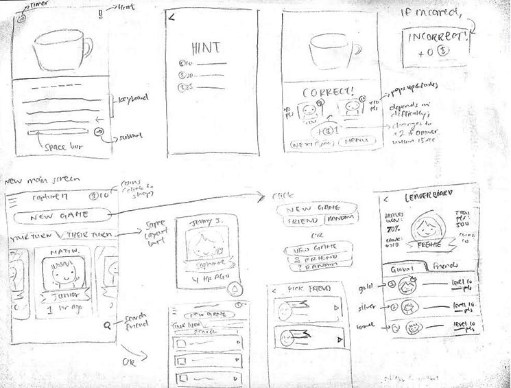
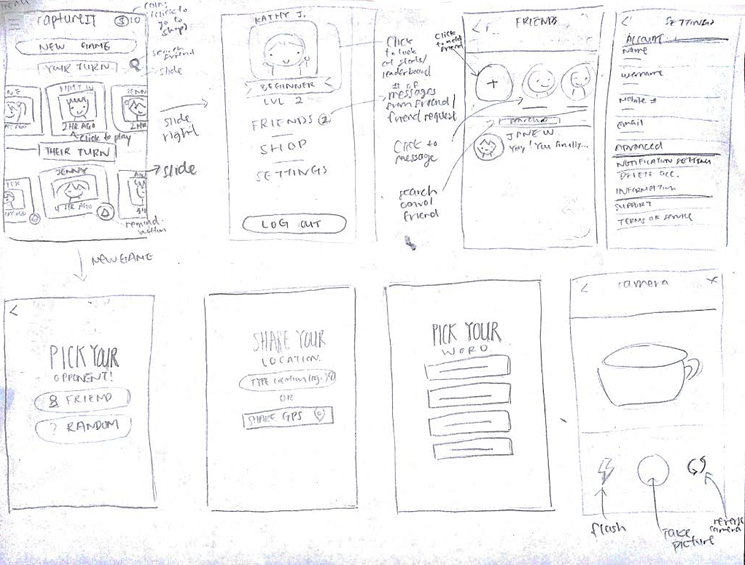
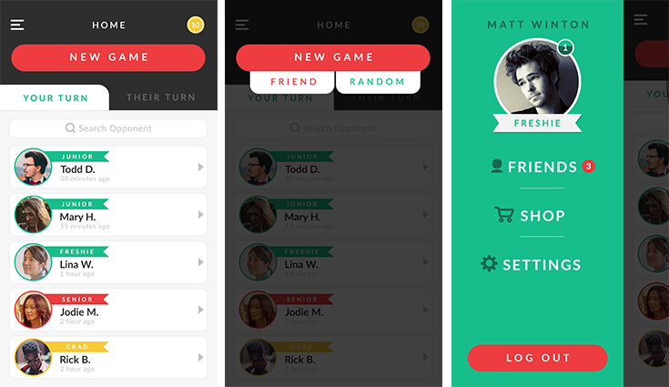
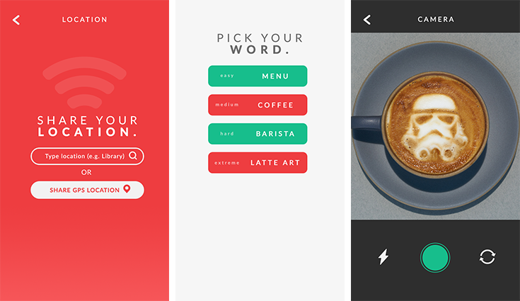
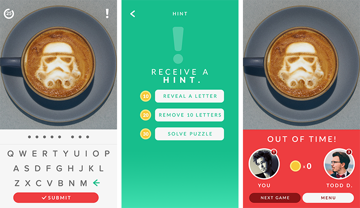

CaptureIT
Type UI/UX - App Design
Date Fall 2016
Intro
CaptureIT is a mobile game app where players capture pictures of given words and send them to their friends to guess. The goal of this project was to create a simple, interactive word game that users can play to pass time.
1. Research
Initially, we had the idea of creating a karaoke-style guessing game app. However, after collecting information from friends and acquaintances about guessing games, we gathered the following findings:
- Social interaction - ability to play with friends
- Short, quick games
- Low-key game - no singing/dancing in public
- Simple layout
2. Analysis
Persona/Storyboards
User personas and storyboards were created based on research.
Task Flow
Based on the personas, storyboards, and research, a task flow was created to get a rough idea of how the framework will be like.

3. Design
Paper Prototype
To begin the design process, I drew a rough framework of how I believe the app should look based on the research done in the previous step. Many different layouts were explored to find the one that is best fit for this app.
 High-fidelity Prototype
After receving feedback from friends, I made several changes and created the high-fidelity prototype.
  Want the interactive prototypes?
View Prototype4. Test & Reflect
The app is still currently being reviewed by the client. However, below are things I have learned from my experience so far and changes that I plan to make in the future.
Lessons learned
- Stay in low-fidelity stage as long as possible to explore different ideas instead of sticking to just one. Low-fidelity prototype is important - don’t jump from paper to high-fidelity.
- More formal research should be done.
- Create more personas - not everyone is alike.
Future Plans
- Incentive system - when you reach certain amount of points, google play/app store credits? Free t-shirt? Pins?